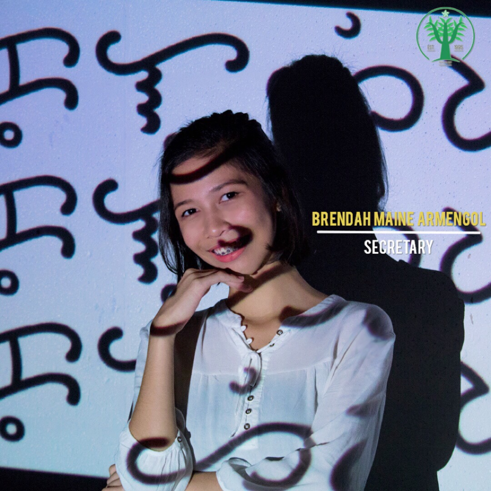
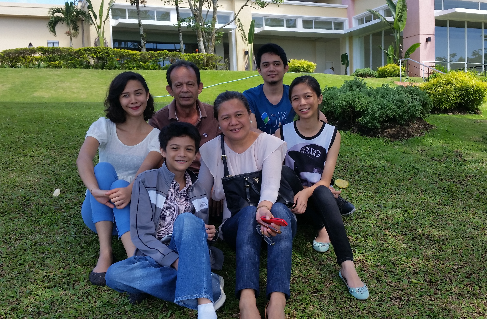
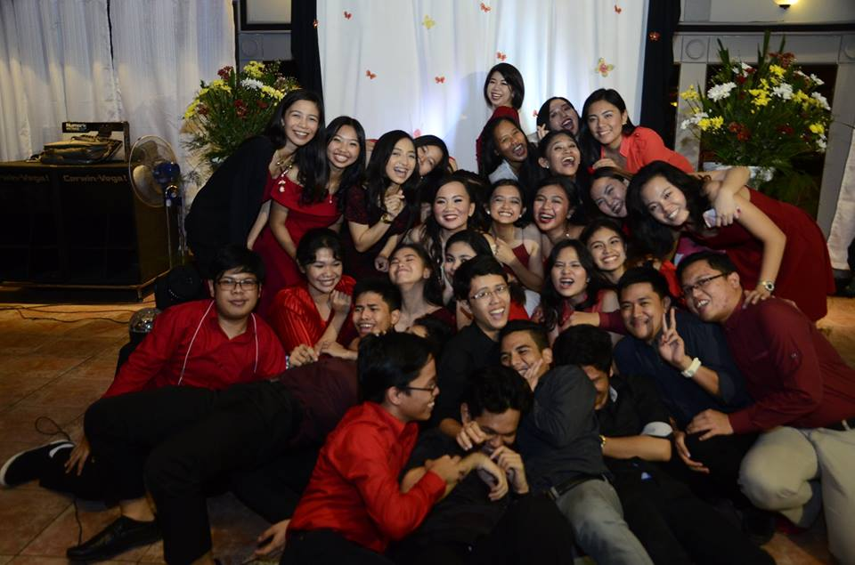

| HOME | ABOUT ME | INTERESTS | HOUSE TOUR |
introduction
|  | ||
|
Brendah Maine E. Armengol August 6, 1998 19 years old B26 L24 Cuevasville Subd. Daanghari Rd. Molino, Bacoor, Cavite Educational Background Preschool: Davidville Academy, Paranaque City Grade School: Ann Arbor Montessori Learning Center, Paranaque City High School: Las Pinas Science High School, Las Pinas City College: 3rd Year, BS Psychology De La Salle University Dasmarinas, Cavite Favorites Color: Blue Food: Chicken and Pizza Band: 30 seconds to Mars Actors: Jared Leto, Brad Pitt, Tom Hanks Drink: Milk Tea Perfume: Omnia Amethyste Bvlgari Fast Food Chain: Bonchon & Mcdo |
FAMILY |
|
I am Brendah Maine E. Armengol and I am 19 years old. I was born in a small clinic in Las Pinas City but grew up in Paranaque City. My first school was Davidville Academy up until nursery, then I transferred to Ann Arbor Montessory Learning Center until Grade 6. Lastly, I graduated High School in Las Pinas City National Science High School. We transferred here in Cavite when I was just in the 5th grade. First of all, family means everything to me. They are the reason why I still have the courage to live and to fulfill my dreams, except for God of course. For me, family is the foundation of what helped you become what you are now and will help you travel to your journeys throughout your life. I can say that my own family is nowhere near perfect. We do not have a strong emotional bond with each other. I come from a family of 6. I have 3 siblings and I am the 3rd child. My eldest sibling is Kuya Edward who is now 25 years old, second is Ate Brigitte, 22 years old, followed by myself at 19 years old, and our youngest child in the family, Edzel who is 14 years old. My mom is the kind of mother who is not showy in terms of affection but we never thought of the fact that she lacks love for us because she never fails to attend to our needs and care for us at all times. My dad, on the other hand, is a strict but very sweet kind of father who always thinks of our safety and our well-being. In our family, even if tend to be on bad terms often, we still never forget to show love for each other in many ways possible. |
FRIENDS |
|
I think our friendship is the strongest frienship because we have been together since Grade 1. The one on the left is Jaira and the one in the middle is Chelsea. We now study at different universities but whenever there is time, we try to catch up with each other. But currently, we are really very busy so our last meeting was during Chelsea's debut. We really don't talk anymore that much because we have our own circle of friends now but we know that whenever we would need each other's presence or guidance, anytime, anywhere, we wouldn't be able to resist each other. |

|
This particular group of friends is definitely one of a kind. I have been with Einstein (our 4th year section) since 2nd year and we sure made a lot of unforgettable memories. I can say that all of us grew and developed together in those 3 years. I have learned a lot from them that’s for sure. They have influenced me in a lot of ways, but mostly academically. I wouldn’t have gained my achievements in college without their help. Our section was the star section and each one of us has our own skills and talents but for me I was not really part of the “elite” group in Einstein. I was not really a leader before and just follows whatever their plans are for our projects or school works, etc. But through that process, they gave me so much to remember. Not only creative juices to use whenever there are activities, but also the way they lead and govern people. I have just realized the sufferings they have been through in High School when I stepped into college when the responsibilities are now being dropped on me. I kept on saying to them nowadays like, “Ganito pala nafefeel niyo dati” and of course if I have not witnessed any kind of leadership from them, it would not really be possible for me right now to adjust and accomplish a lot of things. |

|
When I entered college, these 6 people made my journey bearable. From left to right, they are Shasnah, Jayzza, Jill, me, Marielle and Kath. Ever since 1st year, we have been together and through God's provision, no one has been kicked out of the BS Program since we have our retention policy to maintain. We only have been together for 3 years but we know so much about each other already. In hard times, especially academically, we would depend on each other and make sure that no one will be left behind.
|